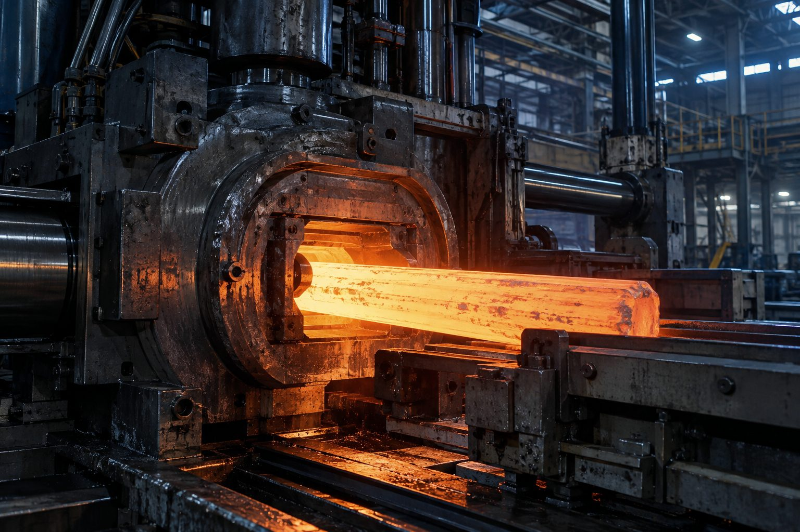

世界最大級の見本市「ALUMINIUM 2026」、デュッセルドルフで開幕へ
業界最大級の国際見本市がドイツで10月6〜8日に開催される。800を超える出展社と2万人規模の来場者が見込まれ、押出・圧延から表面処理、リサイクル、ソフトウェアまでバリューチェーン全体が集結する。
現地に行けなくても、出展社リストから自社の商流に関係しそうな技術トレンドは追っておきたい。
元記事(BBR News)
米商務省は2026年9月23日、一般合金アルミシートに課されていた関税の対象からアルミ缶用素材(can stock)を除外する最終決定を公表した。ただし除外対象は厳格に規定されており、飲料缶の胴体・蓋・タブ用の板厚範囲や特定の調質基準を満たす場合に限られる。
適用要件は非常に細かく規定されており、該当性の誤判定は追加関税リスクにつながる点に注意したい。
元記事(Discovery Alert)を読む業界最大級の国際見本市がドイツで10月6〜8日に開催される。800を超える出展社と2万人規模の来場者が見込まれ、押出・圧延から表面処理、リサイクル、ソフトウェアまでバリューチェーン全体が集結する。
現地に行けなくても、出展社リストから自社の商流に関係しそうな技術トレンドは追っておきたい。
元記事(BBR News)世界最大級のアルミニウム業界専門展示会「ALUMINIUM」が10月6日から8日までドイツ・デュッセルドルフで開催される。押出加工・熱処理・表面処理・自動化などバリューチェーン全体の技術が出展される見込み。
AIやサステナビリティをテーマにした講演も予定されており、調達・技術動向の最新情報収集の好機になると考えられる。
元記事(tradefairdates.com)LME3か月物アルミニウム先物は1トン=3,290ドルまで上昇し、2週間安値からの反発を強めた。中東情勢の影響で域内生産が前年比44%減となっている。LME在庫は36年ぶりの低水準付近にとどまり、上海先物(SHFE)の在庫も減少を続け、現物需給の逼迫を示している。一方で米ドル高が上値を抑える要因となっている。
在庫逼迫と地政学リスクが併存する局面であり、調達担当者は先物カーブとプレミアム動向を注視したい。
元記事(Trading Economics)米国では輸入依存が続く一方で、年間10億ドル相当のアルミ缶が埋立処分されているとの報告が公表された。AI廃棄物解析企業グレイパロットによれば、この廃棄量は年間約1,100万メガワット時のエネルギー損失に相当し、選別ライン到達分の89%は本来回収可能とされる。
国内スクラップ回収の高度化は、輸入プレミアム上昇局面での地金調達コスト低減策として実務上注目に値すると考えられる。
元記事(AL Circle)ギリシャのMetlen Energy & Metalsは、再生アルミニウム生産拠点EP.AL.ME.向けに自動選別・処理・溶解設備の導入を目的とした2500万ユーロの投資を発表した。稼働完了後は生産量を25万トン超に引き上げる計画。
EUの重要原材料法やCBAM対応を見据えた二次地金増強の動きとして、欧州向け低炭素アルミ調達先の選択肢拡大につながると考えられる。
元記事(Investing.com)イラン戦争の長期化により湾岸産アルミニウムの供給が不安定化している。ホルムズ海峡の事実上の封鎖と製錬所への報復攻撃で生産・輸送が滞り、湾岸からの輸入に頼る日本も厳しい状況に直面している。
湾岸依存度の高い調達先を持つ企業は、代替調達先の分散化を急ぐ必要があると考えられる。
元記事(Wedge ONLINE)国際アルミニウム協会(IAI)は2026年9月22日、ニューヨークで開催された気候週間(Climate Week NYC)にて、飲料缶バリューチェーン各社と共にリサイクル促進イベントを共催した。同イベントはリサイクルを環境課題としてだけでなく事業機会として位置づけ、投資・技術革新・業界連携による成長戦略を議論した。
再生地金の供給拡大は輸入プレミアム上昇局面でのコスト分散策として実務的に有効と考えられる。
元記事(International Aluminium Institute)トランプ政権が推進するオクラホマ州の大型アルミ製錬所建設計画（総額40億ドル、EGAとセンチュリー・アルミニウム主導）を巡り、地元イノラ市議会は建設許可のモラトリアムを2027年4月まで延長し、住民投票の実施を決定した。両社は司法手続き中の投票実施に不服を表明している。
米国内での新規製錬能力立ち上げは供給多様化の鍵だが、地元合意形成の長期化リスクを注視したい。
元記事(Reuters (via MINING.COM))センチュリー・アルミナムとEGAが共同開発するオクラホマ州イノーラの新製錬所は年産75万トン規模で、総投資額は約40億ドルとされる。カナダではリオティントがケベック州のAP60製錬所拡張を進め、追加で年間約16万トンの一次アルミ生産能力を積み増す計画。米政府はルイジアナ州グラマーシーのアルミナ精錬所再稼働に4.5億ドルを拠出する方針。
新設・再稼働が相次ぐが商業生産開始は数年先が多く、当面の需給逼迫緩和には直結しないと考えられる。
元記事(ScrapMonster)中国のアルミニウム生産量は8月に前年同月比4.7%増となり過去最高を記録、年初来の累計は3100万トンを超えた。中東情勢による世界的な供給不足を埋めるべく増産が進み、政府の年間生産上限（約4500万トン）に近づきつつある。
上限接近により年後半の中国からの輸出余力が縮小する可能性があり、代替供給ソースの確保を注視したい。
元記事(Bloomberg)アルミニウム合金分野の国際会議「ICAA20」が2026年9月13日から17日にかけてドイツ・ベルリンで開催され、オンライン併催の形式で研究者・技術者による最新知見が共有された。
合金開発や軽量化技術の最新動向は自動車・航空向け調達仕様の検討材料になり得ると考えられる。
元記事(日本アルミニウム協会)欧州連合は、対インドFTA署名への悪影響を懸念し、アルミニウムスクラップへの輸出関税導入案を撤回した。欧州の製錬業保護と持続可能性目標を目的としていた措置だが、代わりに環境規則で輸出を抑制する方針に転換した。
欧州発の再生地金フィードストック規制が当面見送られたことで、スクラップ調達コストの急騰リスクは後退したと考えられる。
元記事(MINING.COM (Reuters))ロンドン金属取引所(LME)のアルミニウム価格が9月9日に上昇。現物の買い気配・売り気配とも前日から値を上げ、売り気配は1トンあたり3,353ドルとなった一方、倉庫在庫量には大きな動きが見られなかった。
在庫が横ばいのまま価格だけ上がっている局面は、需給よりも思惑主導の可能性がある点に注意したい。
元記事(AL Circle)中東地域の地政学的リスクの高まりを背景に、アルミニウム価格がここ数年でもっとも高い水準まで上昇。供給網の分断懸念が強まっている。欧州・湾岸・北米では低炭素アルミの新規生産能力(年間16万トン規模)への投資も並行して進んでいる。
調達側としては、価格上昇局面での長期契約の比率と在庫方針を見直すタイミングと考えられる。
元記事(Aluminyum Yapı)ノルスク・ハイドロは2026年8月24日、スタットクラフトとの間で2031年から2040年までの10年間、年間876GWhを供給する電力購入契約（PPA）を締結したと発表された。欧州製錬所の電力調達安定化と脱炭素化を両立させる動きの一環である。
長期再エネPPAは製錬コストの安定化に寄与し、低炭素アルミ調達を検討する需要家には注目材料と言える。
元記事(Tacto（Fastmarkets引用）)リオティントが豪州最大のアルミ製錬所トマゴの電力供給を2038年まで確保する契約を発表。10年間の電力購入契約と併せ、2038年までに11億豪ドル（うち脱炭素向け1億豪ドル）を投資する。
豪州二大製錬所の電力確保が完了したことで、同国からの長期安定調達の信頼性向上が期待できると考えられる。
元記事(Rio Tinto)欧州の年間800万トン規模のアルミ需要を背景に、新たに40万トン分のリサイクル能力が構築されつつあると業界メディアが分析。スクラップ由来アルミの活用は原料調達の観点でも重要テーマになりそうだ。
スクラップ相場・品質基準の変化は、自社のスクラップ調達方針にも波及しうるので継続的に見ておきたい。
元記事(AL Circle)ガーナのアルミニウム開発公社(GIADEC)が、イタリアの設備大手Danieliと約3億ユーロ規模のアルミ箔生産設備建設で覚書を締結。アフリカにおける川下加工能力拡大の動きとして注目される。
アフリカ発の川下加工能力が育つと、中長期的には地金〜半製品の調達ルートが多様化する可能性がある。
元記事(Aluminium International Today)業界メディア大手ファストマーケッツが主催する「Fastmarkets International Aluminium」の次回会合を、サウジアラビアの製錬大手マーデンとの提携によりリヤドで開催すると発表した。
中東の生産・投資拠点としての存在感が高まる中、現地イベントは最新の供給動向を把握する好機になると考えられる。
元記事(Aluminium International Today)YouTubeで配信予定のアルミニウム業界解説チャンネル用に、動画の元ネタをAIが自動収集・要約している個人アーカイブです。一次情報の要約に留め、詳細は各記事のリンク先で確認してください。
相場・設備投資・イベント・地政学・サステナビリティの5分野を中心に、AIが毎回自動でニュースを選定・追記しています。